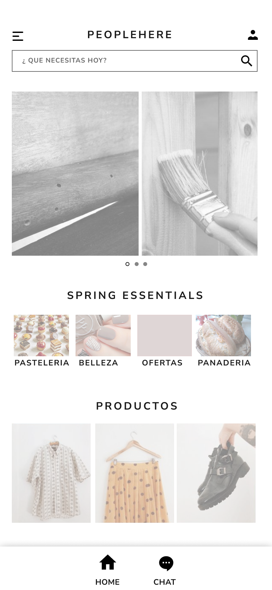

<ion-header [translucent]="true">
</ion-header>

<!-- <ion-content [fullscreen]="true">
  <ion-header collapse="condense">
    <ion-toolbar>
      <ion-title size="large">home</ion-title>
    </ion-toolbar>
  </ion-header>
</ion-content> -->

<picture>
  <source srcset="../../assets/Desktop-mockup-v1-home.png" media="(min-width: 600px)">
  
 </picture>
 

 <ion-tabs>
  <ion-tab-bar slot="bottom">
    <ion-tab-button tab="home">
      <ion-icon name="home"></ion-icon>
      Home
    </ion-tab-button>
    <ion-tab-button tab="radio">
      <ion-icon name="chatbubble-ellipses"></ion-icon>
     Chat
    </ion-tab-button>


  </ion-tab-bar>
</ion-tabs>